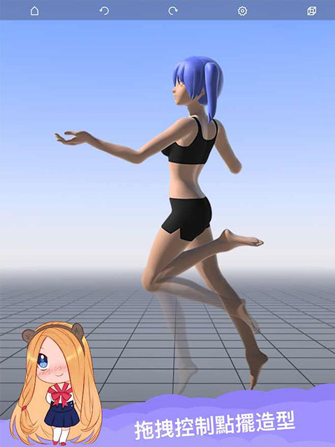
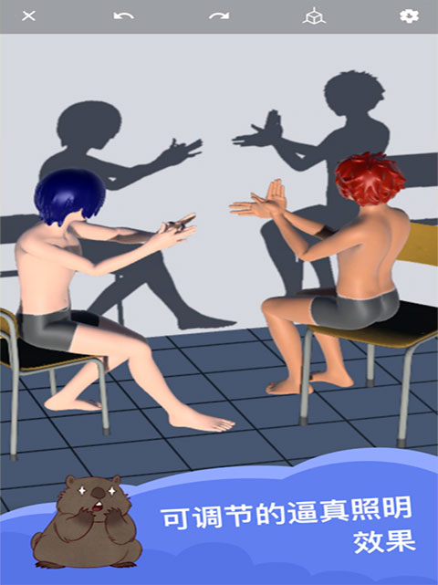

Magic Poser 对比评测：移动端姿势参考到底值不值得充 Pro
画手圈子里 3D 姿势工具不少，但真正把「随手摆个姿势」这件事做透的只有那么几款。Magic Poser 是其中最特殊的一个——它把主战场放在了手机和平板上，这步棋走对了吗？
定位：这个类目里它站在哪
先交代一下背景。画手找姿势参考的工具，大概分三档：最硬核的是 DesignDoll、Blender 自建场景这类桌面软件，功能全但上手门槛高；最省事的是 PoseMyArt、QuickPose 这类网页工具，打开浏览器就能用但功能单薄；中间还有一批做 3D 角色摆姿势的 App，MagicPoser官网 就是这一档的代表。
我为什么单独写它？因为 Magic Poser 是目前唯一一个把「移动端姿势参考」这条路线走得最彻底的产品——从手势操作到界面布局，全是按手机平板的使用习惯设计的，而不是把桌面版简单移植过来。这条路线有没有前途、值不值得花钱，我用了一段时间之后有话要说。

差异化一：多人场景的自由度真的不一样
大部分同类工具在多角色这件事上要么功能锁死，要么摆两个人就卡。Magic Poser 的 Pro 和 Master 版本不限制角色数量，这一点拉开了明显差距。
我试过在里面搭一个四五个角色的战斗场景——攻击者举刀、防御者格挡、两个旁观者在旁边，每个角色的手势、头部朝向、站位距离都能单独调。图层面板可以把角色、武器、环境分组管理，摆好的组直接锁定防止误触，临时隐藏不需要编辑的物体让视口清爽。这一套操作在同类里很少见，多数工具摆完姿势就只能手动截图，没有图层管理这个概念。
性能方面，实测 5 个角色流畅，10 个左右开始轻微掉帧，20+ 才会明显卡。对于绝大多数插画场景来说够用了——你又不是在做实时动画，掉帧几秒忍一忍也能摆完。
差异化二：光影参考是真的能用
很多画手只用姿势参考，光影靠自己经验猜。Magic Poser 在这方面给了一个额外的选项——Views Menu 里一键切换白天、黄昏、夜晚，环境光自动跟着变，影子方向和长度也实时调整。
黄昏模式我用得最多。暖橙色的环境光打在角色脸上，影子拉得很长，导出的 PNG 直接就能当光影参考贴到画布上。夜景需要自己加点光源，但主光的方向和强度调起来也直观，比纯靠脑补靠谱得多。
背景方面，Master 用户可以导出透明背景，后期自己在 Photoshop 里加环境细节。Free 和 Pro 版本只能用纯色或渐变天空，但导出 PNG 抠一下也能用。

差异化三：和桌面 3D 工作流的对接设计
Magic Poser 自己不说「我要替代 Blender」，它把自己定位成桌面软件之前的姿势快速验证环节。这个定位很准。
创意构思阶段，在 Magic Poser 里摆好几个关键姿势（比如奔跑的起步、腾空、落地），导出 OBJ 到 Blender 里当参考。省去了从零搭基础几何体、画草图猜结构的几个小时。分镜也是一样——摆好每个镜头的角色位置、道具、相机角度，导出多角度 PNG 给后面做渲染的人看，沟通成本低很多。
要注意的是，导出的 OBJ 是纯网格没有骨骼绑定，面数也不高。如果要做高模雕刻或绑骨动画，还是得在 Blender、Maya 或 ZBrush 里重新处理。Magic Poser 做的是「姿势验证」这一步，不是全流程，具体的导入导出参数和支持的软件列表可以去MagicPoser文档查。
它的取舍：这些优势是有代价的
先说最明显的——移动端的性能天花板。不管 Magic Poser 优化得多好，手机和平板的算力就是那样，复杂场景下的流畅度肯定比不过桌面软件。如果你经常搭十几个角色的大场景，还是得考虑桌面端方案。
然后是 Free 版的限制。免费用户只能用单角色，不能添加新角色，也不能导出 OBJ。想要多角色和导入导出就得充 Pro——安装包从官方下载拿就行。Pro 和 Master 的区别主要在透明背景导出和一些高级材质。价格不算贵，但对于偶尔用一次的人来说可能会犹豫。
还有一个细节：Magic Poser 没有视线控制器，角色眼球不会自动看向某个人。多人对话场景里想让两个人互相对视，只能靠调整头部朝向来近似，这一点做得不如某些桌面工具精细。
选购结论
什么样的人选 Magic Poser？如果你是插画师、漫画作者，需要经常找姿势参考，但不想在桌面软件上花太多学习时间，而且有随时掏手机摆姿势的需求——它就是目前最好的选择。移动端交互自然，多人场景灵活，光影参考够用，导出对接桌面 3D 软件也顺畅。
什么样的人选别的？如果你是 3D 动画师或角色设计师，需要精细的骨骼绑定、高模雕刻、实时动画预览——那还是 Blender、DesignDoll 这类桌面端更合适，Magic Poser 顶多做前期姿势验证。如果只是偶尔摆个单人姿势参考，PoseMyArt 这类免费网页工具也能凑合用。
我自己的结论是：对于以插画创作为主的画手来说，Magic Poser 值得充 Pro。它在「移动端多人姿势参考」这个细分上做得比任何同类工具都完整，省下来的时间和试错成本，很快就能把会员费赚回来。有想法的话可以先试试看，免费版虽然只能单角色，但基本功能都能用，体验过再决定要不要升级。想深入研究的话资料在三个地方都能找到——开源社区可以看GitHub，国内镜像用Gitee，还有一份放在GitCode方便不同平台访问。